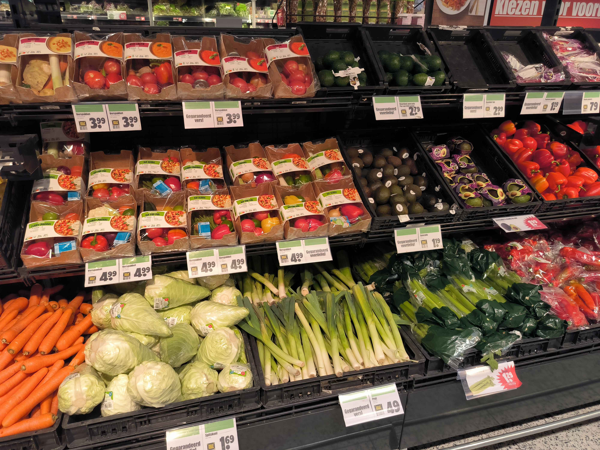

Fiber: The Key to Digestive Health and Long-Term Wellness
Fiber is an essential part of a healthy diet, and although it doesn’t provide calories like carbohydrates, protein, or fats, it plays a crucial role in maintaining digestive health and supporting overall well-being. For active individuals, fiber helps ensure that the body processes nutrients effectively, allowing for better energy utilization and recovery.
What is Fiber?
Fiber is a type of carbohydrate that your body can’t digest. While most carbs are broken down into glucose to provide energy, fiber passes through your digestive system mostly intact. It helps regulate the body’s use of sugars and keeps hunger and blood sugar in check. There are two main types of fiber: soluble and insoluble, each with unique benefits for your health.
Soluble Fiber: Dissolves in water and forms a gel-like substance in the gut, helping to lower cholesterol and regulate blood sugar. You can find it in foods like oats, apples, and beans.
Insoluble Fiber: Doesn’t dissolve in water and helps move food through your digestive system, promoting regular bowel movements. This type of fiber is found in whole grains, nuts, and vegetables.
Why Is Fiber Important?
For athletes, gym-goers, and anyone with an active lifestyle, fiber is essential for:
Digestive Health: Fiber helps keep your digestive system running smoothly, preventing constipation and promoting regular bowel movements.
Weight Management: High-fiber foods are more filling, helping you stay satisfied for longer and manage your weight or appetite more easily.
Blood Sugar Control: Fiber slows the absorption of sugar into the bloodstream, helping to prevent spikes in blood sugar levels, which is particularly beneficial for sustaining energy during long workouts.
Heart Health: Soluble fiber can help reduce cholesterol levels, improving cardiovascular health and reducing the risk of heart disease.
Where Can You Get Fiber?
Fiber is found in plant-based foods. It’s important to incorporate a variety of high-fiber foods into your diet to reap the benefits of both soluble and insoluble fiber. Here are some excellent sources:
Soluble Fiber:
Oats and oatmeal
Beans and lentils
Apples, oranges, and pears
Carrots and Brussels sprouts
Flaxseeds and chia seeds

Carrots and other fibers
Apples, oranges and other fibers
Insoluble Fiber:
Whole grains (whole wheat bread, brown rice, barley)
Nuts and seeds
Vegetables (broccoli, spinach, kale)
Wheat bran
Vegetables
How Much Fiber Do You Need?
The amount of fiber you need depends on your age and gender, but most adults should aim for 25 to 38 grams of fiber per day. Here’s a simple guideline to help you meet your daily fiber intake:
Women: 25 grams per day
Men: 38 grams per day
If you’re very active or an athlete, meeting these recommendations can help ensure your body is functioning at its best, improving nutrient absorption and recovery.
Balancing Fiber in Your Diet
Pre-Workout: Stick to moderate amounts of fiber before intense exercise to avoid digestive discomfort during workouts. Opt for lower-fiber options like bananas or white rice if needed.
Post-Workout: Incorporate high-fiber foods with your post-workout meals to aid in recovery and promote long-term gut health.
Throughout the Day: Spread your fiber intake evenly across meals to avoid any potential bloating or discomfort from consuming too much at once.